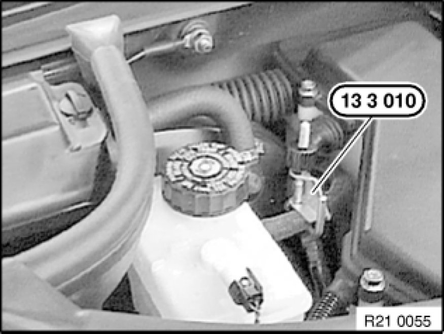
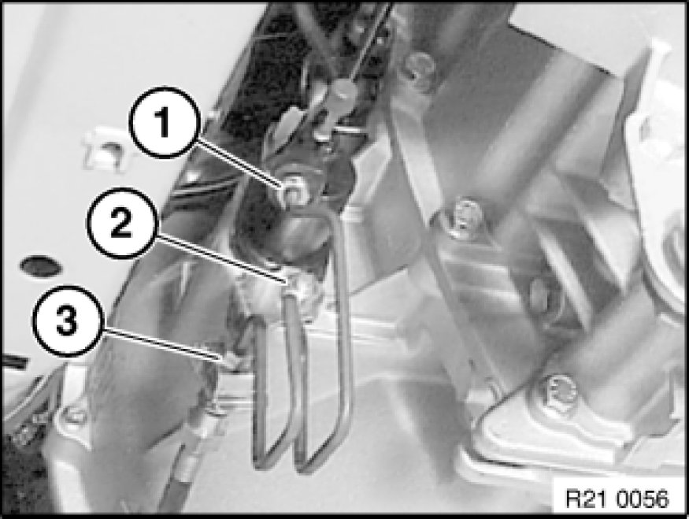
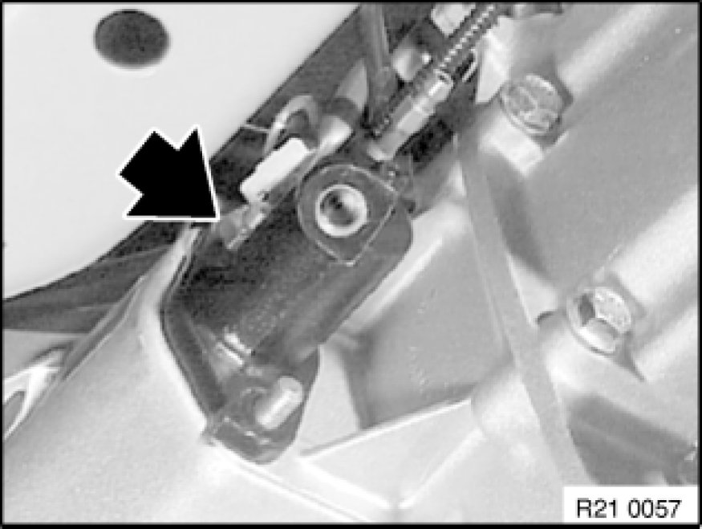
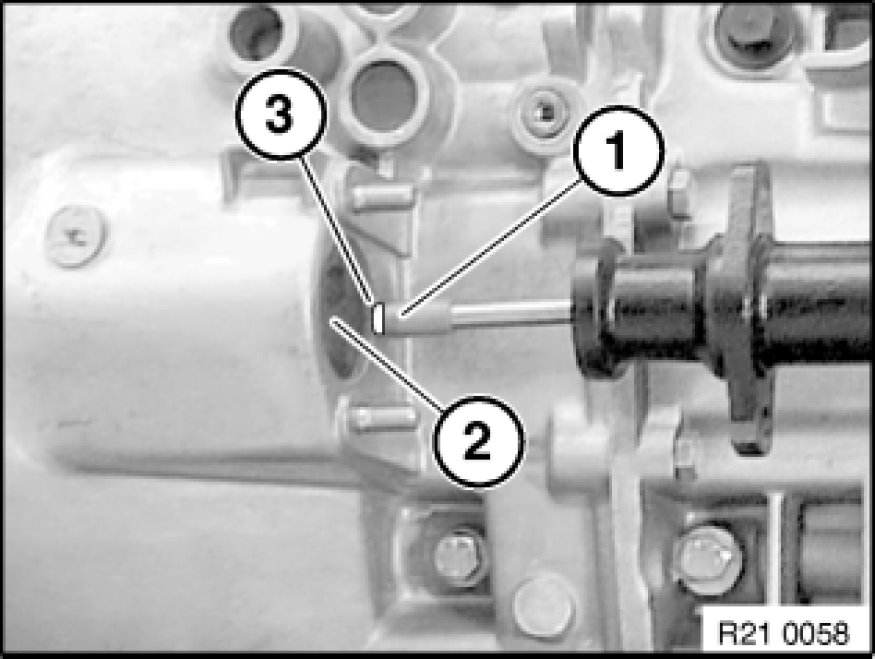
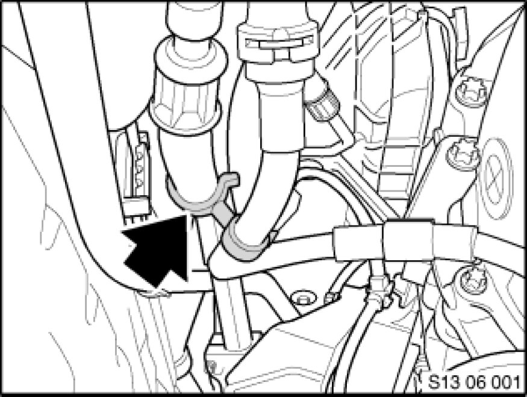

Clutch Slave Cylinder: Service and Repair
21 52 510 - Removing and installing or replacing clutch slave cylinder

Special tools required:
- 13 3 010 13 3 010 Hose Clip

Note:
After completing work bleed clutch hydraulic system Service and Repair.
Important!
From 08.06 a plastic clutch slave cylinder is installed in the E81, E87 and E9X.
Important notes on installation are described in this work step.

Seal supply hose to clutch master cylinder with special tool 13 3 010 13 3 010 Hose Clip.
Note:
Illustration shows E46.

Remove transmission underbody protection if necessary.
Release union screw (1) on hydraulic line.
Release nut (2) and remove hydraulic line (3) with bracket.
Installation:
Tightening torque 21 52 1AZ [1][2]Clutch Hydraulic System.
Note:
Illustration similar.
Version with throttle valve, tightening torque 21 52 12AZ [1][2]Clutch Hydraulic System.

Release nut and remove clutch slave cylinder.
Installation:
Tightening torque 21 52 5AZ [1][2]Clutch Hydraulic System.
Important!
N47 with H-transmission only
Clutch slave cylinder must not rest at the side on the transmission.
Failure to comply with this instruction may result in leaks at the clutch slave cylinder.

Installation:
Clean thrust member (1) and contact face on release lever (2).
Lightly grease thrust member (1) on contact face (3).
Grease, refer to BMW Service Operating Fluids.

Important!
Spacer between fuel line and pressure hose of clutch slave cylinder must be correctly fitted.